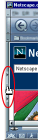
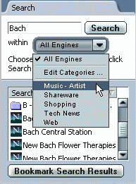

Welcome to Mozilla! One of the most popular ways people use Mozilla is to browse the Web. Navigator, the Mozilla component that lets you visit web pages, offers many ways to visit web pages and search the Web.
This section introduces you to Navigator, and how you can use it to browse, search, and save web pages.
|
In this section: Copying, Saving, and Printing Pages Using Languages and International Content |
|
In this section: |
When you start Mozilla, you see Navigator, your browser. A "What's New" page appears automatically in the browser window when you first launch Mozilla.
After the first launch, you will normally see your home page when you launch Mozilla. Unless you choose a home page yourself, your home page is chosen by your network or Internet service provider, or you see Mozilla's home page.
To choose your own home page, see Specifying How Mozilla Starts Up.
Tips:
[ Return to beginning of section ]
You move to a new page by typing its URL—its location (address) on the Web. URLs normally begin with "http://," followed by one or more names that identify the address. For instance, "http:/mozilla.org".
Using the lock icon near the lower-right corner of the window, you can check a web page's security status at any time. For details, see Checking Security for a Web Page.
Tip: To quickly select the URL in the Location Bar, press Ctrl+L (Cmd+L> on Mac OS).
|
Location Bar
|
Don't know a URL? You can type part of a URL, such as "cnn" (for www.cnn.com); or you can type a general word, such as "gifts" or "flowers." Navigator guesses what page you want to view, or displays a page with a choice of links related to the word you typed.
If you are new to the Internet, see the New to the Net Tutorial.
[ Return to beginning of section ]
Most web pages contain links you can click to move to other pages.
[ Return to beginning of section ]
There are several ways to re-visit pages:
| Back Forward | |||
| Location Bar |
Tip: The Sidebar History tab also allows you to choose from pages you've visited during the past several sessions. For information, see Adding Sidebar Tabs.
The history list contains links to recently visited pages. The Location Bar list contains links to pages you've typed into the Location Bar and then visited.
To access the history list from Navigator, open the Go menu and choose History. To access the Location Bar list, click the arrow at the right end of the Location Bar.
Tip: To quickly open the history list, press Ctrl+H (Cmd+Shift+H on Mac OS).
If you don't want the Location Bar or history list to display the pages you've been visiting, you can clear the history list and Location Bar history entirely or selectively.
To delete all pages from the Location Bar or history list, begin from the Navigator window:
To selectively delete pages from the history list, do any of the following:
Tip: To sort the history list, click one of the categories (Title, Location, or Last Visited). Click the title again to reverse the order.
[ Return to beginning of section ]
If a page is taking too long to appear, or you change your mind and don't want to view it, click the Stop button.
To refresh the current page, or get the most up-to-date version, click the Reload button, or press Ctrl+R (Cmd+R on Mac OS).
|
Reload
|
Stop
|
||
To refresh the current page and reset all changes made (if the page contains a form), hold down the Shift key and click the Reload button, or press Ctrl+Shift+R (Cmd+Shift+R on Mac OS).
[ Return to beginning of section ]
The addresses, or URLs, of web pages can be quite long and difficult to remember. Fortunately, it's not necessary to memorize URLs in order to browse the Web. Your browser has a list of bookmarks, which are pointers to interesting web pages.
To go to a bookmarked page, begin from the Navigator window:
Tip: To retrace your steps, click the Back arrow.
You can save your own bookmarks to point to pages you frequently visit, or to other interesting places on the Web. See Creating New Bookmarks for more information.
[ Return to beginning of section ]
When you visit more then one web page at a time, you can use Tabbed Browsing to navigate the Web faster and easier.
Tabbed Browsing lets you open tabs, each displaying a web page, within a single Navigator window. You don't have to have several windows open to visit several different web pages. This frees up space on your desktop. You can open, close, and reload web pages conveniently in one place without having to switch to another window.
You can manage your navigation tabs easily and control when tabs are opened automatically. For more information about setting Tabbed Browsing preferences, see Navigator Preferences - Tabbed Browsing.
To learn more about using Tabbed Browsing, see Tabbed Browsing.
[ Return to beginning of section ]
In addition to navigating the Web with Navigator, you can let the Web come to you by using Sidebar.
Sidebar is a customizable frame in your browser where you can keep items that you need to use all the time—the latest news and weather, your address book or Buddy List, stock quotes, a calendar—and many other available options. Sidebar presents these items to you in tabs that it continually updates.
Mozilla comes with some Sidebar tabs already set up, but you can customize Sidebar by adding, removing, and rearranging tabs. For details, see My Sidebar.
To view an item in Sidebar, click its tab.
|  |
Sidebar Handle |
If it is not already open, open Sidebar by clicking its handle. If the handle is missing, open the View menu in Navigator, choose Show/Hide, and then Sidebar from the submenu. |
Tip: To quickly open or close the Sidebar, press F9
[ Return to beginning of section ]
|
In this section: |
There are three ways to search quickly: from the Location Bar, from Sidebar, and from the Net Search page.
Searching for web pages on a particular topic is as easy as typing a question, or just a word or two, into the browser's Location Bar, as shown below.
For example, if you want to find information about baby dolls:
After you perform a search, the results are saved in Sidebar's Search tab until you do a new search. You don't have to click the Back button to retrieve the search results.
Note: You can also use Internet Keywords to search from the Location Bar.
The Sidebar Search tab lets you quickly search and bookmark your search results. For example, if you want to find information about toy cars:
Note: If the Sidebar Search tab contains a list of search engines from which to choose, then it is set to search in Advanced mode and you will have to choose one or more search engines before clicking Search. You can keep it that way or change to a basic setting in Preferences.
Tip: To display the next or previous page of search results quickly, click the Next and Previous buttons at the bottom of the Sidebar Search tab.
The Net Search page lets you type in a Search term or phrase, or explore several categories (such as Arts & Entertainment, Business, and many more) that may interest you. To visit the Net Search page, perform one of these steps:
Mozilla allows you to search for words you select within a web page:
Mozilla opens a new window and uses your default search engine to search for your selected words. To learn how to change the search engine used to search for your selected words, see Navigator Preferences - Internet Search.
[ Return to beginning of section ]
You can set the Sidebar Search tab to Advanced mode, which lets you narrow a search or choose one or more search engines.

You can specify which search engines should be used for different categories of searches. For example, you can select one set of search engines to search for travel, and select another set of search engines to search for software.
[ Return to beginning of section ]
You can choose a different search engine as the default. You can also specify how you want search results displayed in Sidebar.
[ Return to beginning of section ]
Internet Keywords work with the Location Bar to help you quickly find specific types of information. There are several ways to use Internet Keywords:
Hint: The most commonly used Internet Keywords are listed in the pull-down list to the left of the Location Bar. Click the triangle and choose from the list. To see a longer list of keywords, choose List of Keywords.
Important: To use Internet Keywords, you must press Enter on your keyboard (Return on Mac OS) instead of clicking the Search button. Pressing Enter activates the Internet Keyword feature; clicking Search initiates a search.
To see the difference, try this:
If typing Internet Keywords into the Location Bar is not working for you, check your Smart Browsing preferences to be sure the Internet Keywords feature is enabled.
To see a recent stock quote for a company, type "quote" followed by the company's stock ticker symbol, and press Enter.
If you don't know a company's stock ticker symbol, type the company's name. The quote page will list all companies with similar names, and you can choose the one for which you want a quote.
[ Return to beginning of section ]
To find text within the page you are currently viewing in Navigator:
To find the same word or phrase again:
Other than searching text through the Find dialog, you can also search by typing directly into a Web page.
To search for a link, type several characters into the active browser window to navigate to any link with that text in it.
If you repeat the same character, it will start to cycle through all
the links that begin with that character. However, if it can find a
match with the exact string you've typed, such as oo
in woods
, it will go there first.
/helloto search any text containing the string
hello.
Type Ahead Find works with any window, such as this help file (try it!).
This feature also works with international characters such as Chinese and Japanese.
[ Return to beginning of section ]
To search the bookmarks list, begin from the Navigator window:
Tip: To quickly open the Bookmark Manager, press Ctrl+B (Cmd+B on Mac OS).
To search the History list:
To use the search results:
Tips:
[ Return to beginning of section ]
|
In this section: |
To copy some text from a page, begin from the Navigator window:
You can paste the text into other programs.
To copy a link (URL) or an image link from a page:
You can paste the link into other programs or into Navigator's Location Bar.
[ Return to beginning of section ]
To save an entire page, begin from the Navigator window:
When you view a page containing frames and a frame is currently selected, the Save Frame As option is offered in the drop-down list in addition to Save Page As. This lets you save only the page within the selected frame.
Saving a file onto your hard drive lets you view the page (or its HTML code) when you're not connected to the Internet.
To save an image from a page:
To save a page without displaying it (which is useful for retrieving a nonformatted page, like a data file, that's not intended for viewing):
Important: Some links automatically download and save files to your hard drive after you click them. The URLs for these links often begin with "ftp" or end with a file-type extension such as "au" or "mpeg." These links might transmit software, sound, or movie files, and can launch helper applications that support the files.
Tip: To set an image as your desktop wallpaper on Windows, right-click on an image and choose Set As Wallpaper from the pop-up menu.
[ Return to beginning of section ]
To print the current page, begin from the Navigator window:
To print selected text, begin from the Navigator window:
The size of the printed page, not the size of the onscreen window, determines placement of content on the printed page. Text is wrapped and graphics are repositioned to accommodate paper size.
To have an early look at how a page will look before it is printed, you can use Print Preview. Begin from the Navigator window:
From Navigator, open the File menu and choose Print Preview.
In Print Preview, you can do the following with pages you want to print:
 ,
Previous
,
Previous  ,
First
,
First  ,
or Last
,
or Last  button
to move between pages.
button
to move between pages.Note: Some Print Preview functions are different or unavailable on Mac OS, Linux or Unix.
Note: Some Page Setup functions are different or unavailable on Mac OS, Linux or Unix.
To customize how pages are printed in Mozilla, you can use Page Setup:
From Navigator, open the File menu and choose Page Setup.
In Page Setup, you can change the following settings for pages you want to print:
Tip: To see a preview of changes made to Page Setup, use Print Preview.
[ Return to beginning of section ]
|
In this section: |
If you browse, compose, or send and receive email in more than one language, you need to select the appropriate character encodings and fonts.
A character encoding method is the way a document or message has been converted to data to be used by your computer. All web documents and mail and news messages use a character encoding method (also known as a character set, character coding, or charset).
The character encoding method for a document may depend on its language. Some languages e.g. most West European languages, share the same encoding method. Others such as Chinese, Japanese, and Russian use different methods. In contrast, Unicode provides language-independent encoding methods. UTF-8, for examples, can be used for any language document.
Your version of Mozilla is set to a default character encoding appropriate for your region. However, if you use more than one language, you may need to select appropriate character encoding methods and designate the fonts you wish to use for your language/script.
To select character encodings, begin from the Navigator window:
The character encoding methods you select are added to the Character Encoding menu. If you have more than one encoding method selected, the active one has a bullet (dot) next to it.
Mozilla can detect which character encoding a document uses, and can display it correctly on your screen. To take advantage of this capability, begin from the Navigator window:
To make changes to your list of active character encodings:
To change the default fonts within a language group:
Many web page authors choose their own fonts and font sizes. You can use the author's font settings by selecting "Allow documents to use other fonts."
To adjust the readability of fonts, select from the drop-down list the dots
per inch (dpi) for displaying Web pages. Select "Other" to open the
Calibrate Resolution dialog box, which allows you to calibrate your resolution
by measuring how long a line appears on your screen.
[ Return to beginning of section ]
The language you use for Mozilla affects the text of buttons, dialog boxes, menus, tools, and other items. The functionality of these items remains the same.
To set your preferred language:
Note: You must restart Mozilla after you change your preferred language.
The content pack you use affects the home page, bookmarks, toolbar contents, Sidebar, and other items.
To use a content pack:
Note: You will have to need to restart Mozilla after you change to another content pack.
Tip: To download more language packs or content packs, click Download More.
Web pages are sometimes available in several languages. Mozilla presents pages in the language you prefer, if it is available. You can specify the languages you wish to see, in order of preference.
To set language preferences:
Note: Two-letter codes enclosed in brackets appear next to each language in the list. These are standard abbreviations for languages. For a complete list, see the online document, Codes for the Representation of Names of Languages.
[ Return to beginning of section ]
For information about Mozilla in multiple languages, see the online document International Users Page.
[ Return to beginning of section ]
|
In this section: Making Mozilla Your Default Browser |
Navigator can handle many types of files. However, for some files, such as movies or music, Navigator needs plug-ins or "helper" applications that can handle those files. If Mozilla doesn't have the needed helper application or plug-in, it can still save the file to your hard disk. When saving files, you can keep track of them using Download Manager.
Plug-ins are helper applications that extend the functionality within Navigator and run within Mozilla. Plug-ins like Sun Java, Macromedia Flash, and RealNetworks RealPlayer allow Mozilla to show multimedia files and run small applications, such as movies, animations, and games.
When you installed Mozilla, you had the option of adding some of these most popular plug-ins. You don't have to install them separately. However, you can also install plug-ins after you install Mozilla. To see the plug-ins for Mozilla that are currently installed, see the online web page, Mozilla Plug-in Manager.
To see a full list of Mozilla plug-ins you can install, see the Browser Plug-ins page at Netscape.
When files can not be used within Mozilla, you have to option to launch helper applications that open outside of Mozilla. For example, to play MP3 files, programs like Winamp can be opened outside of Mozilla.
The settings in the Helper Applications preferences panel tell Navigator which helper applications to use on your computer. Usually, these preferences don't need to be changed since they are preconfigured. Also, if Navigator doesn't know which helper application to use, it allows you to find helper applications within the download dialog box.
The download dialog box has these options:
Tip: You can clear your saved options for "Always ask before opening this type of file" in preference. For more information, see Navigator Preferences - Helper Applications.
For experienced users to fine-tune the Helper Applications preferences:
To add a new helper application to the list:
To specify how Navigator should handle downloaded files:
To remove an item from the list:
To learn more about Helper Application preferences, see Navigator Preferences - Helper Applications.
You can use Download Manager to keep track of files you download. Download Manager shows the following information:
To open Download Manager, do the following:
The following menu options are available in Download Manager:
[ Return to beginning of section ]
Note: This section discusses settings and features present only on Windows.
Mozilla is best known for displaying web pages, both on the Internet and on your computer. To easily open web pages, you can make Mozilla your default browser.
Making Mozilla your default browser allows it to automatically open common file formats and protocols used on the Internet. Common Internet file formats and protocols include the following:
Image Files:
JPEG, GIF, PNG, BMP and ICO
Internet Document and Language Files:
Internet Protocols:
HTTP, HTTPS, FTP,
Chrome, Gopher
After installation is finished, Mozilla checks to see if it is the default browser for any of the common Internet file formats or protocols. If it isn't, you are asked, "Mozilla is not currently set as your default browser. Would you like to make it your default browser?"
Click Yes to make Mozilla the default browser. If you click No, you will be prompted with this question each time Mozilla starts, unless you deselect the checkbox "Check at startup next time, too."
If you deselect the checkbox, "Check at startup next time, too," you can still make Mozilla the default browser by changing your settings in Preferences. To learn how to set Mozilla as the default browser through Mozilla preferences, see Navigator Preferences - Navigator.
You can manually customize how Mozilla handles various file formats and protocols. For more information, see Advanced Preferences - System.
[ Return to beginning of section ]
When you bring a web page to your screen, Mozilla automatically loads (starts up) several features that help interpret web pages. These features, Java and JavaScript, can make web pages more lively, but they take time to load.
To learn how to turn off Java, see Advanced Preferences - Advanced.
To learn how to turn off JavaScript, see Advanced Preferences - Scripts & Plug-ins.
[ Return to beginning of section ]
Your computer stores copies of frequently accessed pages in the cache. This way, the computer doesn't have to retrieve the page from the network each time you view it.
To set the size of the cache or to clear it:
Important: A larger disk cache allows more pages to be quickly retrieved, but more of your hard disk space is used.
When you quit Mozilla, it performs cache maintenance. If maintenance takes longer than you wish, try reducing the size of the disk cache.
To specify how often Navigator checks the network for page revisions (so that you don't keep "stale" pages in the cache too long):
If pages that should be in the cache are taking longer to appear than they should, make sure the preference is not set to "Every time I view the page," because the verification requires a network connection that takes time.
To refresh a page at any time:
[ Return to beginning of section ]
Mozilla can notify you when updates for your software are available, and it can install the updates automatically. Mozilla can also inform you when a new version of Mozilla is available.
To learn about setting up automatic software installation, see Advanced Preferences - Software Installation.
[ Return to beginning of section ]
If your mouse has a mouse wheel, you can control how the mouse wheel functions in Mozilla.
To learn more about setting up a mouse wheel, see Advanced Preferences - Mouse Wheel.
[ Return to beginning of section ]
Note: Quick Launch is available only on Windows versions of Mozilla.
Quick Launch shortens the time it takes for Mozilla to start. When Mozilla uses Quick Launch, the Mozilla logo icon is present in the system tray (near the clock).
|
|
|
Mozilla Quick Launch Icon
|
Tip: To quickly start components (such as Composer, Mail & Newsgroups, and the Address Book window), right-click the Mozilla logo icon and select the component in the pop-up menu.
When you installed Mozilla, you were given the option of enabling or disabling Quick Launch. If enabled, Quick Launch loads part of Mozilla into memory when Windows first starts (and each time Mozilla first starts up). Quick Launch allows Mozilla to stay in memory after you close all Mozilla windows. This lets Mozilla quickly start up when you need it, without having to load all of Mozilla. If your computer is low in memory, you can disable Quick Launch to conserve memory.
To enable or disable Quick Launch in Mozilla:
Tip: To easily disable Quick Launch, right-click on the Mozilla logo in the system tray (near the time) and select "Disable Quick Launch" in the pop-up menu.
[ Return to beginning of section ]
|
In this section: |
This section explains how to work with proxies.
Many organizations block access from the Internet to their networks. This prevents outside parties from gaining access to sensitive information. The protection is called a firewall.
If your organization has a firewall, the browser may need to go through a proxy server before connecting you to the Internet. The proxy server prevents outsiders from breaking into your organization's private network.
Before you start:
To set the browser to work with the proxy:
Domain names are the part of a URL that contains the name of an organization, business, or school—such as netscape.com or washington.org. If you use local host names without the domain name, list them the same way. Use commas to separate multiple host names. The wildcard character [*] cannot be used.
For more information on using the Proxy preferences panel, see Advanced Preferences - Proxies.
[ Return to beginning of section ]
19 June 2002
Copyright © 1998-2003 The Mozilla Foundation.